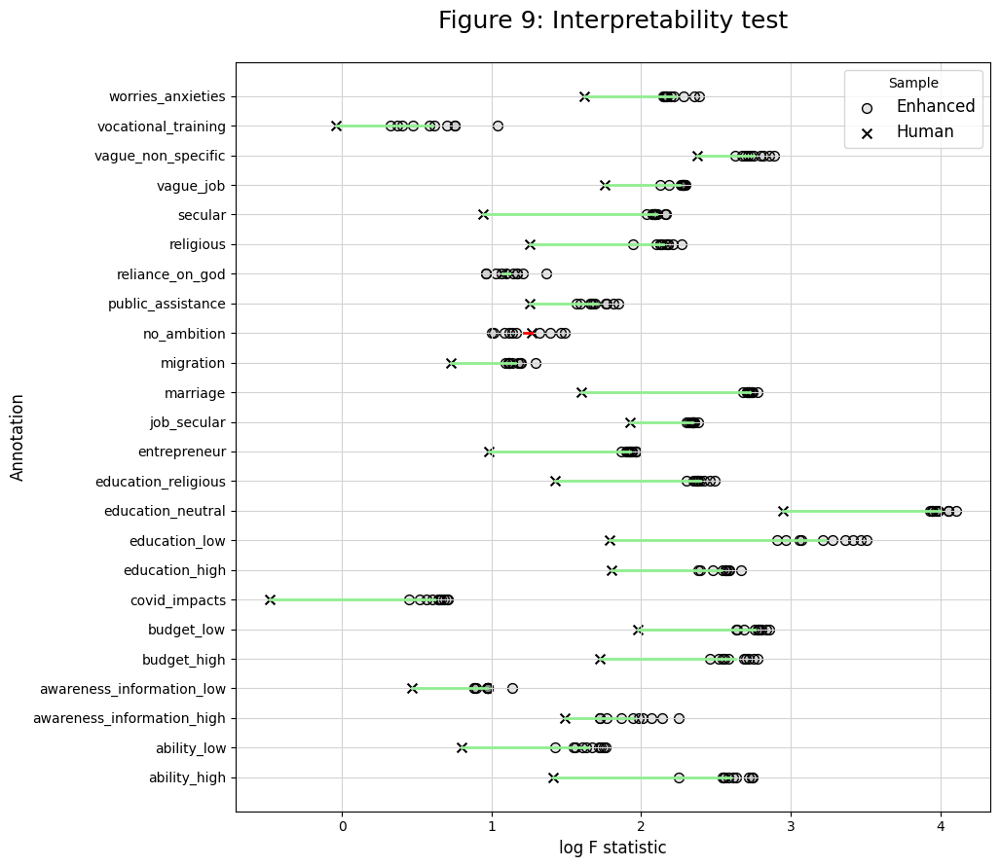

Interpretability Test
Contents
Interpretability Test#
Imports#
import os
import pandas as pd
from iqual import tests
Load datasets#
data_dir = "../../data"
### Enhanced qualitative data
enhanced_data = pd.read_csv(os.path.join(data_dir,"kfold_enh_pred_mean.csv"))
### Quantitative data
quant_df = pd.read_csv(os.path.join(data_dir,"quant_data.csv"))
Variables#
annotation_vars = [
"ability_high",
"ability_low",
"awareness_information_high",
"awareness_information_low",
"budget_high",
"budget_low",
"covid_impacts",
"education_high",
"education_low",
"education_neutral",
"education_religious",
"entrepreneur",
"job_secular",
"marriage",
"migration",
"no_ambition",
"public_assistance",
"reliance_on_god",
"religious",
"secular",
"vague_job",
"vague_non_specific",
"vocational_training",
"worries_anxieties",
]
Variables to Groupby#
id_vars_human = ['uid','data_round','refugee','annotated']
id_vars_enhanced = ['uid','data_round','refugee','annotated','bootstrap_run']
Human Annotated Dataframe (Merged with quantiative data)#
human_df = enhanced_data.loc[enhanced_data.annotated==1,[*id_vars_human,*human_annotation_vars]].copy()
human_df = human_df.rename(columns={c+"_act":c for c in annotation_vars}).drop_duplicates()
human_df = pd.merge(human_df,quant_df,on=['uid','data_round'],how='left')
human_df['sample_type'] = 'Human'
Enhanced Dataframe (Merged with quantiative data)#
enhanced_df = enhanced_data[[*id_vars_enhanced,*annotation_vars]].copy()
enhanced_df = pd.merge(enhanced_df,quant_df,on=['uid','data_round','refugee'],how='left')
enhanced_df['sample_type'] = 'Enhanced'
HH characteristic variables for Interpretability#
# Numerical regressors
numerical_vars = [
'hh_head_sex',
'eld_sex',
'parent_reledu',
'num_child',
'hh_head_age',
'parent_eduyears',
'eld_age',
'hh_asset_index',
'hh_income',
'int_trauma_exp',
]
Interpretability tests on Human Data#
interpreter = tests.Interpretability(human_df,
annotation_vars=annotation_vars,
numerical_regressors=numerical_vars,
).fit_all()
human_interp_df = interpreter.get_results()
human_interp_df['sample_type'] = 'Human'
human_interp_df.head(5)
| annotation | fstat | log_fstat | pval | sample_type | |
|---|---|---|---|---|---|
| 0 | ability_high | 4.092906 | 1.409255 | 1.705786e-05 | Human |
| 1 | ability_low | 2.220586 | 0.797771 | 1.520367e-02 | Human |
| 2 | awareness_information_high | 4.439502 | 1.490542 | 4.458398e-06 | Human |
| 3 | awareness_information_low | 1.594255 | 0.466406 | 1.039609e-01 | Human |
| 4 | budget_high | 5.604002 | 1.723481 | 4.496422e-08 | Human |
Interpretability tests on Enhanced Data (Looping over Bootstrap runs)#
enh_interp_dfs = []
bootstrap_runs = enhanced_df['bootstrap_run'].unique()
for b in bootstrap_runs:
interpreter = tests.Interpretability(enhanced_df[enhanced_df['bootstrap_run']==b],
annotation_vars=annotation_vars,
# categorical_regressors=categorical_vars,
numerical_regressors=numerical_vars,
).fit_all()
interp_df = interpreter.get_results()
interp_df['bootstrap_run'] = b
enh_interp_dfs.append(interp_df)
enhanced_interp_df = pd.concat(enh_interp_dfs)
enhanced_interp_df['sample_type'] = 'Enhanced'
interpret_data = pd.concat([human_interp_df,enhanced_interp_df],axis=0)
interpret_data = interpret_data.sort_values('annotation',ascending=False,ignore_index=True)
interpret_data.head(5)
| annotation | fstat | log_fstat | pval | sample_type | bootstrap_run | |
|---|---|---|---|---|---|---|
| 0 | worries_anxieties | 9.836116 | 2.286061 | 2.895519e-16 | Enhanced | 10.0 |
| 1 | worries_anxieties | 10.534363 | 2.354643 | 1.333396e-17 | Enhanced | 3.0 |
| 2 | worries_anxieties | 10.886772 | 2.387548 | 2.812771e-18 | Enhanced | 1.0 |
| 3 | worries_anxieties | 8.596269 | 2.151328 | 6.682446e-14 | Enhanced | 9.0 |
| 4 | worries_anxieties | 5.055125 | 1.620403 | 3.978705e-07 | Human | NaN |
Calculate Differences#
enhanced_avg_df = enhanced_interp_df.groupby('annotation')['log_fstat'].mean().reset_index()
enhanced_avg_df['sample_type'] = 'Enhanced'
enhanced_avg_dict = dict(enhanced_avg_df[['annotation','log_fstat']].values)
human_avg_dict = dict(human_interp_df[['annotation','log_fstat']].values)
Visualize#
import matplotlib.pyplot as plt
fig, ax = plt.subplots(figsize=(10,10))
# Difference in F-statistic (Logarithmic) averages
for annotation in annotation_vars:
enh_value, human_value = enhanced_avg_dict[annotation], human_avg_dict[annotation]
line_color = 'lightgreen' if enh_value >= human_value else 'red'
ax.plot([enh_value, human_value], [annotation, annotation], color=line_color, linewidth=2)
# Enhanced Data Log F-statistic values for all bootstrap runs
enhanced_x = interpret_data.loc[interpret_data['sample_type'] == 'Enhanced', 'log_fstat'].tolist()
enhanced_y = interpret_data.loc[interpret_data['sample_type'] == 'Enhanced', 'annotation'].tolist()
ax.scatter(enhanced_x, enhanced_y, fc=(0,0,0, 0.1), marker='o', s=50, ec='k', lw=1, label='Enhanced')
# Human Data F-statistic (Logarithmic) values
human_x = interpret_data.loc[interpret_data['sample_type'] == 'Human', 'log_fstat'].tolist()
human_y = interpret_data.loc[interpret_data['sample_type'] == 'Human', 'annotation'].tolist()
ax.scatter(human_x, human_y, c='black', marker='x', s=50, label='Human',)
# Titles, Labels, Legends and formatting
ax.set_xlabel('log F statistic',fontsize=12)
ax.set_ylabel('Annotation', fontsize=12)
ax.legend(title='Sample',fontsize=12,loc='best')
ax.set_title('Figure 9: Interpretability test',fontsize=18, pad=25)
ax.grid(True, color='lightgray')
plt.show()
